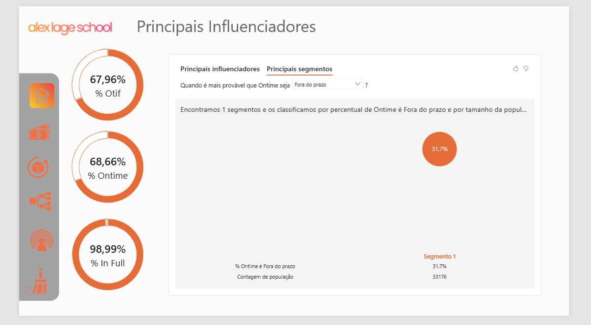
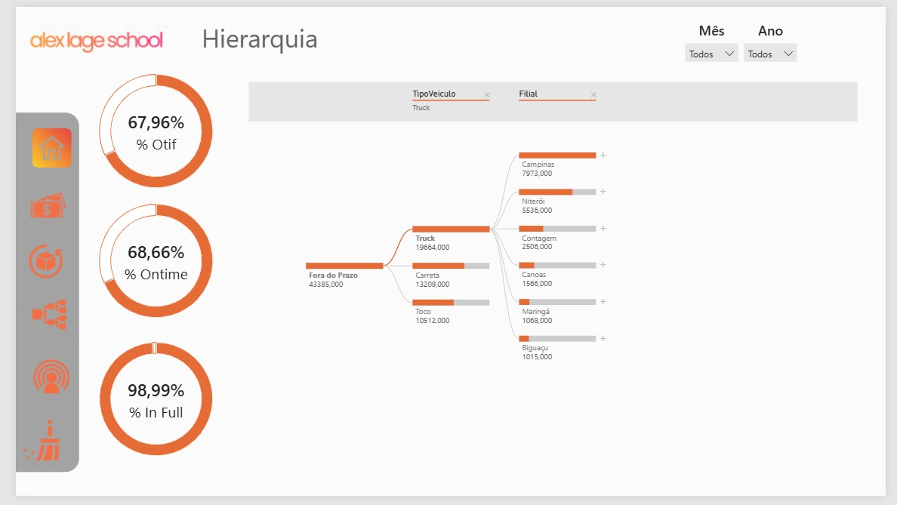
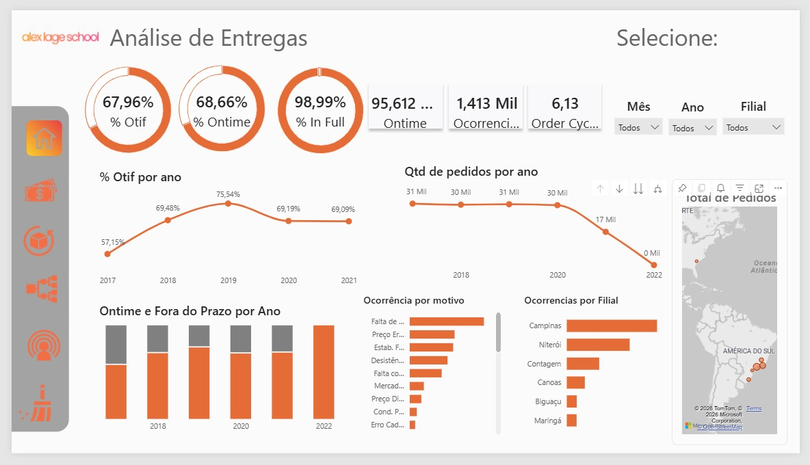
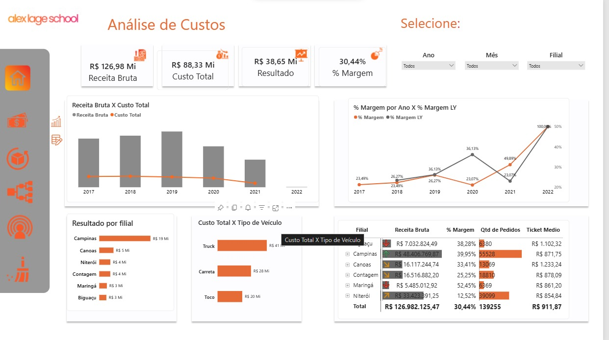
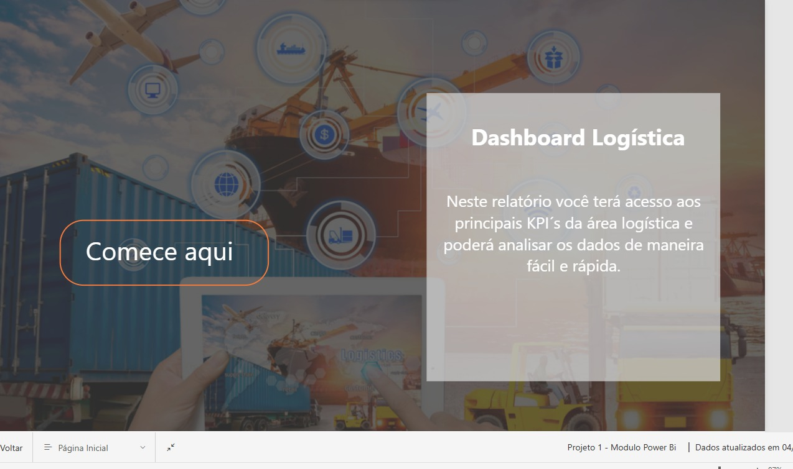

Sobre o projeto
Este projeto foi desenvolvido com dados simulados para reproduzir um cenário de análise empresarial. O objetivo foi construir uma solução interativa capaz de transformar dados operacionais em indicadores e informações que facilitem a análise e a tomada de decisão.
O dashboard reúne diferentes perspectivas de performance, permitindo analisar indicadores de entregas, ocorrências, custos, receita, margem, filiais, tipos de veículos e evolução ao longo do tempo.
O que desenvolvi
- Estruturação de Tabela Calendário;
- Relacionamentos entre tabelas, cardinalidade e direção de filtros;
- Criação e organização de Tabela de Medidas;
- Medidas e cálculos utilizando DAX;
- KPIs de OTIF, On Time e In Full;
- Análises de custos, receita, margem e ocorrências;
- Hierarquia por tipo de veículo e filial;
- Tooltips personalizados;
- Botões de navegação e experiência de interação;
- Construção da identidade visual com apoio do Figma.
Tecnologias e competências
Dashboards





Aprendizados
O projeto foi uma oportunidade para consolidar conhecimentos de modelagem, DAX, construção de indicadores e visualização de dados, além de desenvolver uma visão mais orientada à experiência do usuário e à comunicação das informações.